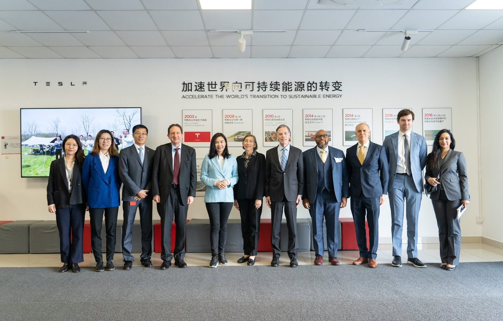

"I wanted to come to Shanghai to thank the Asia-Pacific and China teams"
Musk's first visit to Giga Shanghai since 2023 came at the end of a day in Shenzhen with the US delegation to the Asia-Pacific Economic Cooperation (APEC) meetings.
Grace Tao, a Tesla global vice president, said in a Weibo post on Thursday evening that Musk had flown to Shanghai specially, even though he was spending only 24 hours in China, and quoted him: "I wanted to come to Shanghai to thank the Asia-Pacific and China teams," Lianhe Zaobao reported. She said he talked with employees about the latest work on driver-assistance technology and humanoid robots, sharing news that "got everyone very excited," and praised the plant's manufacturing and the Chinese team's execution. He described Shanghai as a model of innovation and efficiency and urged staff to set aside short-term speculative thinking and "do things that truly matter."


"Let's make the future look like the future," Musk told the team, according to posts from the event that he shared on X, Teslarati reported. It was his first visit to the factory since 2023, Reuters reported. The plant, which sources 98% of its parts in China, delivered 810,889 Model 3 and Model Y vehicles in the first ten months of the year, up 21.4%. Of the 67,829 vehicles it shipped in October, 59,012 were exports, Teslarati noted.
Most of that output now leaves China. Tesla's retail sales in China fell 66% from a year earlier in October, the lowest since July 2022, according to CnEVPost figures cited by Teslarati, and Chinese owners are still waiting for a full rollout of Tesla's supervised self-driving software. Musk said a year ago he hoped for full approval in China around early 2026, but Tesla has not announced a launch date.
Cybercab arrives in Dallas
"Howdy Dallas. Cybercab has arrived in your city," Tesla's Robotaxi account posted at 11:47 a.m. EST Thursday. Dallas is the second US city after Austin to get the two-seat car, which has no steering wheel or pedals; riders book it in the Tesla Robotaxi app, and Tesla has run unsupervised Model Y robotaxis in Dallas since April, Teslarati reported. Tesla's AI software chief Ashok Elluswamy had named Dallas as next on the Oct. 21 earnings call. Tesla also serves riders with Model Y robotaxis in Houston, Fort Worth, Tampa, San Antonio, Orlando and Miami, InsideEVs reported.

Tesla priced the Cybercab at $29,990 before taxes with a required $299-a-month Autonomy Subscription for the select customers it has invited to buy one, with deliveries targeted for December, Teslarati reported.
Torment II on an AI4 computer
"Tesla's AI, running on our little AI4 computer, can now reach Torment II in Diablo," Musk posted at 5:34 a.m. EST Friday. On Oct. 10 he had written that Digital Optimus, the on-screen agent Tesla is building with SpaceXAI, could play "about halfway through the Diablo campaign so far just by looking at the screen like a human," Tesla News Wire reported. The agent watches live screen video and answers with keyboard and mouse actions, and Musk has said it would run mostly on AI4, the chip already in Tesla's cars. Friday's post came without video or test details, PANews noted.